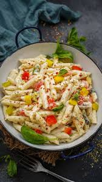
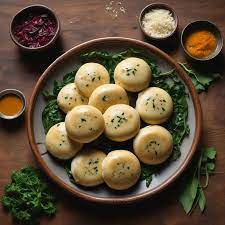
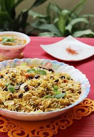
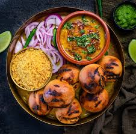

Dal Makhani
Ingredients
- Urad Dal
- Kidney Beans
- Butter
- Cream
Recipe
- Soak urad dal and rajma overnight, then pressure cook with water.
- Heat butter and oil, sauté cumin, onions, ginger-garlic paste, and tomato puree.
- Cook until oil separates, add chili powder, garam masala, and salt.
- Add cooked dal and rajma, simmer for 20 minutes.
- Add cream and butter, cook for 5 minutes, and serve hot.

White Sauce Pasta
Ingredients
- Butter
- Flour
- Milk
- Pasta
Recipe
- Boil pasta and set aside.
- Sauté garlic and veggies in butter.
- Melt butter in another pan, add flour, stir.
- Add milk gradually, stir until thick, season.
- Mix pasta and veggies, stir, and serve hot.

Siddu
Ingredients
- Wheat Flour
- Yeast
- Walnuts
- Urad Dal
Recipe
- Prepare dough with wheat flour, water, salt; rest 1 hour.
- Make stuffing with mashed potatoes, spices, chilies.
- Stuff dough discs and seal like dumplings.
- Steam for 20 minutes.
- Serve with ghee or chutney.

Biryani
Ingredients
- Basmati Rice
- Vegetables
- Onions
- Tomatoes
Recipe
- Marinate with yogurt, spices, and rest.
- Partially cook rice with whole spices.
- Layer rice and marinated mix with herbs and saffron milk.
- Seal and cook on dum for 30 minutes.
- Serve with raita.

Dal Baati
Ingredients
- Wheat Flour
- Semolina
- Yogurt
- Spices
Recipe
- Make baati dough and roast until golden.
- Cook toor, moong, chana dal with spices.
- Temper dal with ghee, mustard, garlic.
- Dip baatis in ghee, crush lightly.
- Serve with dal and chutney.

Paneer Butter Masala
Ingredients
- Paneer
- Tomato Puree
- Butter
- Cream
Recipe
- Sauté onions, tomatoes, and spices in butter.
- Blend into a smooth puree.
- Add paneer cubes and cream.
- Simmer for 10–15 minutes.
- Garnish with coriander and serve hot with naan.